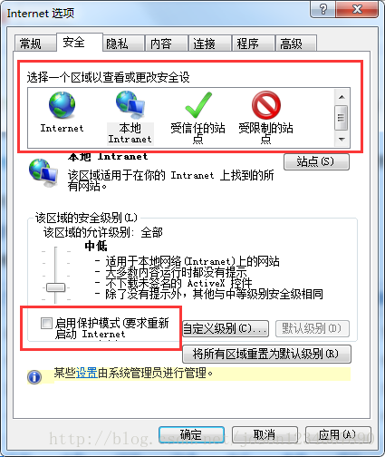

[TOC]
python使用3.7.2， selenium版本为3.141.0， Firefox版本为52， Geckdriver版本：v0.15.0， chrome版本为 73.0.3683.68， IE11， IEDriverServer_x64_3.8.0 。 IE11测试时，输入字符和动作太慢，跑一个用例需要很长时间，不建议使用。
selenium版本为3.141.0
pip install selenium
# 查看是否安装成功
pip show selenium
Firefox和chrome要选择合适的版本， 版本低了高了都不行。 驱动文件需要放在环境变量中，例如可以放在： %PYTHON_HOME%\Scripts 目录下。 参考：selenium对应三大浏览器（谷歌、火狐、IE）驱动安装
Firefox 使用52版没有出错 Firefox需安装驱动：geckdriver ，版本 v0.15.0 可用，版本v0.24.0不可用。下载地址： https://github.com/mozilla/geckodriver/releases?after=v0.17.0
IE IE版本为11，项目需要这个版本，其它版本没有试过。 IE11的驱动为：IEDriverServer_x64_3.8.0 。 版本3.9不可用，无法启动IE11。下载地址： http://selenium-release.storage.googleapis.com/index.html
常出现的错误：
Unexpected error launching Internet Explorer. Browser zoom level was set to 109%. It should be set to 100% 将浏览器的缩放调为100%，在状态栏可调 Unexpected error launching Internet Explorer. Protected Mode settings are not the same for all zones. Enable Protected Mode must be set to the same value (enabled or disabled) for all zones. 将所有区域的保护模式勾选去掉即可，如下

from selenium import webdriver # 导入webdriver包
from selenium.webdriver.common.keys import Keys
import time
#driver = webdriver.Firefox() # 初始化一个火狐浏览器实例：driver
driver = webdriver.Chrome() # 初始化一个IE浏览器实例：driver
driver.maximize_window() # 最大化浏览器
time.sleep(5) # 暂停5秒钟
driver.get("https://www.baidu.com") # 通过get()方法，打开一个url站点
driver.find_element_by_id("kw").click()
driver.find_element_by_id("kw").clear()
driver.find_element_by_id("kw").send_keys("java")
driver.find_element_by_id("kw").send_keys(Keys.ENTER)
Chrome DevTools协议可以调试Chrome浏览器，利用它启动chrome后会打开一个端口，selenium通过此端口和chrome交互。
chrome.exe --remote-debugging-port=9222 --user-data-dir="C:\selenum\AutomationProfile"
-user-data-dir指定Chrome配置文件的目录，如果不指定，使用默认目录。不指定时，selenium控制代码如下：
# 对应你的chrome的用户数据存放路径
profile_dir=r"C:\Users\xxxx\AppData\Local\Google\Chrome\User Data"
chrome_options = webdriver.ChromeOptions()
chrome_options.add_experimental_option("debuggerAddress", "127.0.0.1:9222")
chrome_options.add_argument("user-data-dir="+os.path.abspath(profile_dir))
driver = webdriver.Chrome(chrome_options=chrome_options)
Katalon Recorder是一个chrome浏览器插件，直接在扩展市场可以安装。安装完成后，可以像录制宏一样录制测试脚本，测试脚本可以导出为python等语言脚本。 可以参考：Katalon Recorder 自动录制 Selenium 爬虫脚本
学习资料： Selenium-Python中文文档
只有在屏幕显示范围内元素，才能被点击等操作。所以要操作这些元素，必须把它的位置滚动到显示区域。方法如下：
# 方法一
element.location_once_scrolled_into_view # 此方法滚动不是很准确
# 方法二
driver.execute_script("window.scrollTo(0, document.body.scrollHeight);") # 滚动一屏
多窗口切换：
driver.get("http://www.baidu.com")
# 获取百度搜索窗口句柄
search_windows=driver.current_window_handle
#获取打开所有窗口句柄
all_handles=driver.window_handles
for handle in all_handles:
if handle !=search_windows:
driver.switch_to_window(handle)
......
driver.close() # 关闭当前窗口
driver.switch_to_window(search_windows)
driver.quit() # 注销WebDriver，并关闭所有相关的窗口
多frame切换：
# 通过frame的Id来切换，也可以element来切换
driver.switch_to.frame('x-URS-iframe')
.....
driver.find_element_by_id("dologin").click()
driver.switch_to.default_content() # 跳回最外层的页面
参考：selenium报错Element is not clickable at point及四种解决方法 四种原因和解决办法： - 元素尚未加载 让执行等待一会儿。
from selenium.webdriver.support.ui import WebDriverWait
WebDriverWait(driver, 10).until(EC.title_contains("元素"))
driver.switch_to_frame("frameName") # 根据框架名来切换
driver.switch_to_frame("frameName.0.child") # 子框架
driver.switch_to_default_content() # 返回
# 任选一种
ele.location_once_scrolled_into_view
driver.execute_script("window.scrollTo(0, document.body.scrollHeight);")
menu = driver.find_element_by_css_selector(".nav")
hidden_submenu = driver.find_element_by_css_selector(".nav #submenu1")
ActionChains(driver).move_to_element(menu).click(hidden_submenu).perform()
参考：selenium爬虫中的post坑 如果在selenium程序中，需要对一个rest接口发起POST请求，有三种方式： - 第三方库，如：selenium-requests
from seleniumrequests import Firefox
webdriver = Firefox()
response = webdriver.request('POST', 'https://www.google.com/')
print(response)
brower = webdriver.Firefox(firefox_options=fireFoxOptions)
js = """var xmlhttp=new XMLHttpRequest();
xmlhttp.open("GET","http://127.0.0.1/get.php",false);
xmlhttp.setRequestHeader("Content-type","application/x-www-form-urlencoded");
xmlhttp.setRequestHeader("User-Agent","Mozilla/5.0");
xmlhttp.send("test=1");
return xmlhttp.responseText;
"""
brower.implicitly_wait(30)
#time.sleep(30)
resp = brower.execute_script(js)